Привет, на связи easily!
Тут про взрослую жизнь — без лишнего шума, сложных слов и паники
финансы
быт
здоровье
лайфстайл
документы
карьера
Ну что, смотрим правде в глаза? Мы посчитали баллы — вот как сейчас выглядит твоя карта
Каждый луч показывает, как ты ориентируешься в одной из шести сфер. Баллы отражают твой текущий уровень: 0 — если опыта почти нет, 6 — если в теме чувствуешь себя уверенно. По карте можно быстро понять, где ты уже справляешься сам, а где ещё есть чему научиться.
Финансы:
Документы:
Быт:
Здоровье:
Лайфстайл:
Карьера: